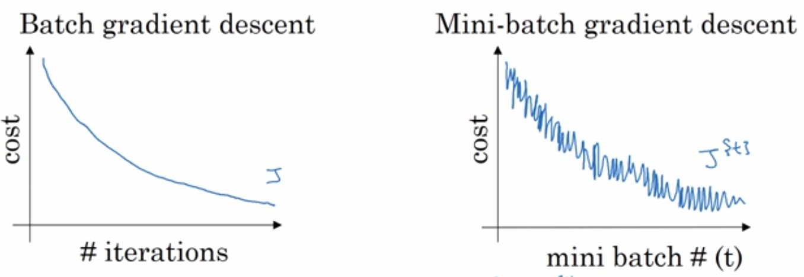
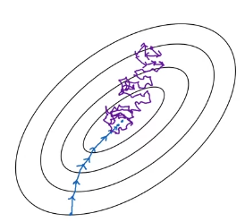
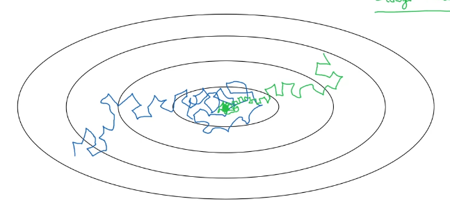

1. 什么是随机梯度下降法
随机梯度下降及其变种很可能是一般机器学习中应用最多的优化算法，特别是在深度学习中。 如第8.1.3节中所讨论的，按照数据生成分布抽取个小批量（独立同分布的）样本，通过计算它们梯度均值，我们可以得到梯度的无偏估计。
算法8.1展示了如何沿着这个梯度的估计下降。
{% raw %}
\begin{algorithm}[ht]
\caption{随机梯度下降（SGD）在第{% math_inline %}k{% endmath_inline %}个训练迭代的更新}
\label{alg:sgd}
\begin{algorithmic}
\REQUIRE 学习率 {% math_inline %}\epsilon_k{% endmath_inline %}
\REQUIRE 初始参数{% math_inline %}\theta{% endmath_inline %}
\WHILE{停止准则未满足}
\STATE 从训练集中采包含{% math_inline %}m{% endmath_inline %}个样本{% math_inline %}\{ x^{(1)},\cdots, x^{(m)}\}{% endmath_inline %} 的小批量，其中{% math_inline %}x^{(i)}{% endmath_inline %}对应目标为{% math_inline %}y^{(i)}{% endmath_inline %}。
\STATE 计算梯度估计： {% math_inline %}\hat{g} \leftarrow +
\frac{1}{m} \nabla_{\theta} \sum_i L(f(x^{(i)};\theta),y^{(i)}){% endmath_inline %}
\STATE 应用更新：{% math_inline %}\theta \leftarrow \theta - \epsilon \hat{g}{% endmath_inline %}
\ENDWHILE
\end{algorithmic}
\end{algorithm}
{% endraw %}
2. 怎样设计SGD的学习率
SGD算法中的一个关键参数是学习率。 之前，我们介绍的SGD使用固定的学习率。 在实践中，有必要随着时间的推移逐渐降低学习率，因此我们将第步迭代的学习率记作。
这是因为SGD中梯度估计引入的噪声源（个训练样本的随机采样）并不会在极小点处消失。 相比之下，当我们使用批量梯度下降到达极小点时，整个代价函数的真实梯度会变得很小，之后为，因此批量梯度下降可以使用固定的学习率。
[success]
SGD引入的噪声不变而真实梯度变小，那么SGD的梯度的可靠性降低，因此使用逐渐降低的学习率。
BGD使用有真实梯度没有噪声，因此可以使用固定学习率。
学习率衰减算法 from Ag
说明：
epoch是一次代码完整过一遍，不是一个batch跑一遍
有时会手动设置衰减，这是在跑模型的过程中，根据当时的状况调整参数。
保证SGD收敛的一个充分条件是
[warning] 8.12、8.13公式怎么推的？有什么指导意义？
且
实践中，一般会线性衰减学习率直到第次迭代：
其中。 在步迭代之后，一般使保持常数。
[warning] 如果保持常数，就不满足8.13了。
学习率可通过试验和误差来选取，通常最好的选择方法是监测目标函数值随时间变化的学习曲线。 与其说是科学，这更像是一门艺术，我们应该谨慎地参考关于这个问题的大部分指导。 使用线性策略时，需要选择的参数为，，。
[success] 线性策略，即公式8.14
：使训练集遍历几百次
：约为的
：检测最早的几轮迭代，选择一个比在效果上表现最佳的学习率更大的学习率，但又不能太大导致严重的震荡。具体步骤在Nilson的书里有介绍。link
通常被设为需要反复遍历训练集几百次的迭代次数。 通常应设为大约的。 主要问题是如何设置。 若太大，学习曲线将会剧烈振荡，代价函数值通常会明显增加。 温和的振荡是良好的，容易在训练随机代价函数（例如使用\,Dropout\,的代价函数）时出现。 如果学习率太小，那么学习过程会很缓慢。 如果初始学习率太低，那么学习可能会卡在一个相当高的代价值。 通常，就总训练时间和最终代价值而言，最优的初始学习率会高于在大约迭代次左右后效果最佳的学习率。
[warning] 就是说，如果学习率选择得好，迭代100次左右就可以了？
因此，通常最好是检测最早的几轮迭代，选择一个比在效果上表现最佳的学习率更大的学习率，但又不能太大导致严重的震荡。
3. 随机梯度下降法 VS 批量梯度下降法
SGD及相关的小批量亦或更广义的基于梯度优化的在线学习算法，一个重要的性质是每一步更新的计算时间不依赖完整训练集样本数目的多寡。 即使训练集样本数目非常大时，它们也能收敛。 对于足够大的数据集，SGD\,可能会在处理完整个训练集之前就收敛到最终测试集误差的某个固定容差范围内。
[success] "处理完整个训练集"是指把所有的训练数据都迭代一遍。
研究优化算法的收敛率，一般会衡量额外误差（excess error） ，即当前代价函数超出最低可能代价的量。
[warning] 什么是收敛率？与“额外误差”有什么关系？
SGD应用于凸问题时，步迭代后的额外误差量级是，在强凸情况下是。
[warning] 强凸问题？
除非假定额外的条件，否则这些界限不能进一步改进。 批量梯度下降在理论上比随机梯度下降有更好的收敛率。 然而，Cram\'er-Rao界限指出，泛化误差的下降速度不会快于。 因此认为对于机器学习任务，不值得探寻收敛快于的优化算法——更快的收敛可能对应着过拟合。 此外，渐近分析掩盖了随机梯度下降在少量更新步之后的很多优点。 对于大数据集，SGD只需非常少量样本计算梯度从而实现初始快速更新，其好处超过了其缓慢的渐近收敛带来的坏处。 本章剩余部分介绍的大多数算法致力于追求实践中有价值的好处，而不在意它的学习率有常数级别的额外误差（在渐进分析上比不上的额外误差）。 我们也可以在学习过程中逐渐增大小批量的大小，以此权衡批量梯度下降和随机梯度下降两者的优点。
了解SGD更多的信息，请查看Bottou98。
[success] Ng补充：SGD和BGD的比较
一个epoch是把所有样本pass through一遍
一个iteration是把一个batch pass through一遍

BGD每一步都是更接近最小值点，SGD的趋势是接近最小值点，但不一定每一次都是
BGD会无限接近最小值点，SGD会在最小值点附近徘徊，迭代的过程中逐渐调小lr，最后徘徊的区域会较小。

 SGD的loss有noise，可以通过减少lr来缓解这个问题。
SGD loss speedup from向量化。而BGD make pross without waiting entire training。通过选择合适的batch size，得到收敛最快。